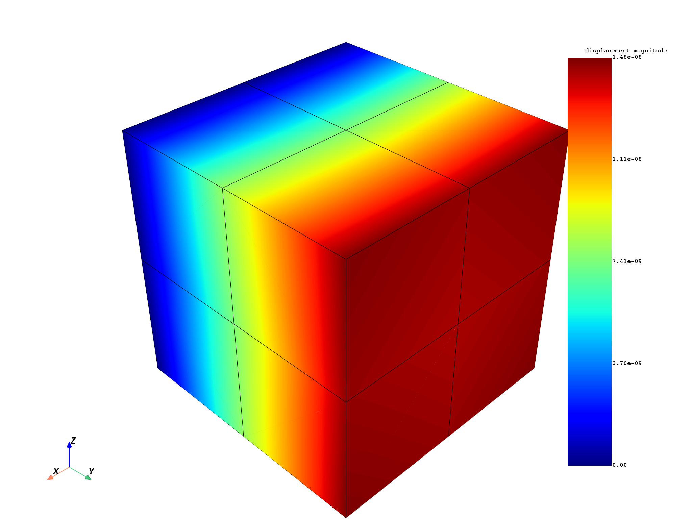

Note
Go to the end to download the full example code.
Convert DPF data to PyVista objects#
Convert DPF meshes and fields to PyVista UnstructuredGrid objects for
in-memory manipulation and custom visualization.
Unlike the VTU export operators, which write files to disk, the
vtk_helper module works entirely in memory:
it converts |MeshedRegion|, |Field|, |FieldsContainer|, and |PropertyField| objects to
pyvista.UnstructuredGrid objects that you can plot, filter, combine, or save
to any format that PyVista supports.
This tutorial demonstrates how to convert a mesh, validate it, enrich it with multiple fields incrementally, and batch-convert all time steps of a transient result at once.
Import required modules#
Import the required modules and the helper functions from
vtk_helper.
from ansys.dpf import core as dpf
from ansys.dpf.core import examples
from ansys.dpf.core.vtk_helper import (
append_field_to_grid,
dpf_field_to_vtk,
dpf_fieldscontainer_to_vtk,
dpf_mesh_to_vtk,
vtk_mesh_is_valid,
)
Load the result file#
Load a static structural result file and extract the |MeshedRegion| and |Model| that are reused throughout the first part of this tutorial.
# Find and load the static structural result file
result_file = examples.find_static_rst()
# Create a DataSources object
ds = dpf.DataSources(result_path=result_file)
# Create a Model for result access
my_model = dpf.Model(data_sources=ds)
# Get the MeshedRegion
mesh = my_model.metadata.meshed_region
Convert a mesh to a PyVista grid#
Use dpf_mesh_to_vtk to
convert a |MeshedRegion| to a pyvista.UnstructuredGrid.
The resulting object contains only the geometry (nodes and connectivity); no
field data is attached yet.
UnstructuredGrid (0x21989492320)
N Cells: 12
N Points: 81
X Bounds: 0.000e+00, 3.000e-02
Y Bounds: 3.000e-02, 6.000e-02
Z Bounds: 0.000e+00, 3.000e-02
N Arrays: 0
Validate the mesh#
Use vtk_mesh_is_valid
to check whether the converted grid passes VTK’s built-in cell validator.
For a valid mesh it prints a confirmation; for an invalid one it lists the
elements that fail each geometric check.
Mesh is valid.
Convert a field to a PyVista grid#
Use dpf_field_to_vtk to
convert a displacement |Field| and its associated mesh in a single call.
Nodal data is automatically stored in grid.point_data; elemental data
goes into grid.cell_data.
Elemental-nodal data is not supported by VTK objects.
# Extract the displacement FieldsContainer and get the first time step
disp_fc = my_model.results.displacement.eval()
disp_field = disp_fc[0]
# Convert the Field and its mesh to a single UnstructuredGrid
disp_grid = dpf_field_to_vtk(field=disp_field, field_name="displacement")
print(disp_grid.point_data)
pyvista DataSetAttributes
Association : POINT
Active Scalars : displacement
Active Vectors : None
Active Texture : None
Active Normals : None
Contains arrays :
displacement float64 (81, 3) SCALARS
Visualize the displacement magnitude#
Use the DPF norm operator to
compute the Euclidean norm of the displacement vector at each node, then
append the resulting scalar |Field| to the grid and plot it.
# Compute the displacement magnitude using the DPF norm operator
norm_field = dpf.operators.math.norm(field=disp_field).eval()
# Append the scalar magnitude field to the displacement grid
disp_grid = append_field_to_grid(
field=norm_field, meshed_region=mesh, grid=disp_grid, field_name="displacement_magnitude"
)
# Plot the magnitude on the mesh
disp_grid.plot(scalars="displacement_magnitude", show_edges=True)

Build a grid incrementally with multiple fields#
Use append_field_to_grid
to enrich an existing grid with additional field data.
This approach is useful when you want to attach several results to the same
UnstructuredGrid — for example nodal and elemental quantities together.
# Create a bare grid from the MeshedRegion
rich_grid = dpf_mesh_to_vtk(mesh=mesh)
# Append the displacement field (nodal location — stored in point_data)
rich_grid = append_field_to_grid(
field=disp_field, meshed_region=mesh, grid=rich_grid, field_name="displacement"
)
# Append the element-type property field (elemental location — stored in cell_data)
eltype_pf = mesh.property_field(property_name="eltype")
rich_grid = append_field_to_grid(
field=eltype_pf, meshed_region=mesh, grid=rich_grid, field_name="element_type"
)
# Inspect the resulting data arrays on the grid
print("Nodal arrays: ", list(rich_grid.point_data.keys()))
print("Elemental arrays:", list(rich_grid.cell_data.keys()))
Nodal arrays: ['displacement']
Elemental arrays: ['element_type']
Convert all time steps of a FieldsContainer#
Use
dpf_fieldscontainer_to_vtk
to convert every |Field| in a |FieldsContainer| to a single
UnstructuredGrid.
Each time step becomes a separate data array keyed by its label space, so
all time steps are accessible from the same object.
# Load a transient result file with multiple time steps
transient_result = examples.download_transient_result()
trans_ds = dpf.DataSources(result_path=transient_result)
trans_model = dpf.Model(data_sources=trans_ds)
# Extract displacement for all time steps
all_disp_fc = trans_model.results.displacement.on_all_time_freqs.eval()
# Convert the entire FieldsContainer to a single UnstructuredGrid
fc_grid = dpf_fieldscontainer_to_vtk(fields_container=all_disp_fc, field_name="displacement")
# Each time step is stored as a separate point-data array
print(f"Number of time-step arrays: {len(fc_grid.point_data)}")
print("Array names (first 3):", list(fc_grid.point_data.keys())[:3])
Number of time-step arrays: 35
Array names (first 3): ["displacement {'time': 1}", "displacement {'time': 2}", "displacement {'time': 3}"]
Total running time of the script: (0 minutes 1.659 seconds)